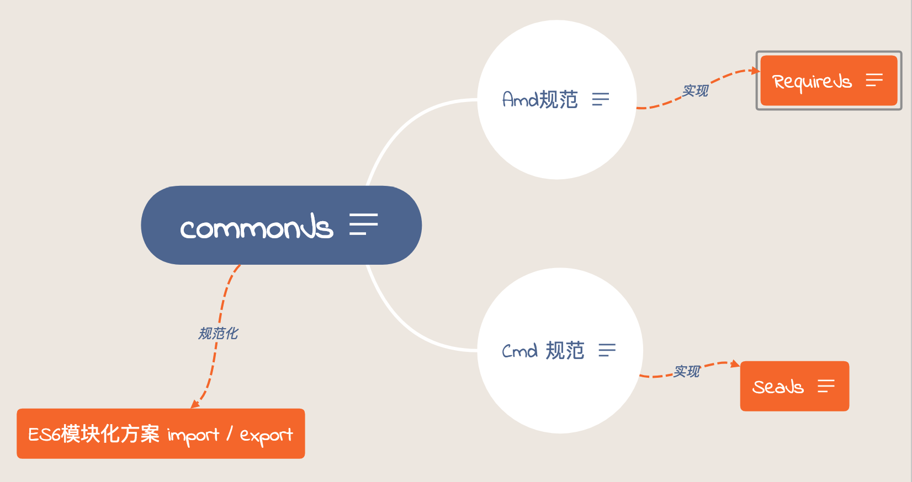
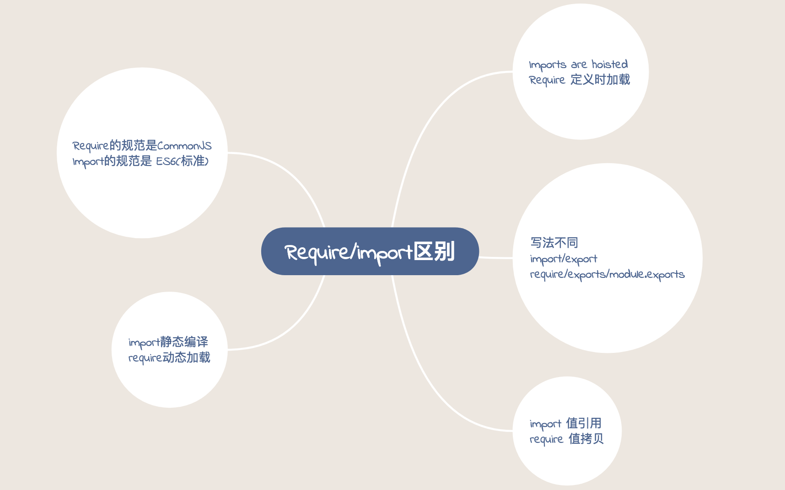

之所以会去写这个，是因为自己最近遇到了 import 的一个问题。
找问题的过称中，发现自己虽然一直在用 import，但对 require/import 的区别并没有了解的很全面。
具体的点就在 Imports are hoisted。趁此机会大概的重新总结下。
历史追溯
了解历史，不一定是使用历史，却可以对整体的知识有个大致的认识。我自己没有经历过
SeaJS/RequireJS时代，所以对它里面具体的原理实现和用法不是特别熟悉。只是看到组里以前同事的旧代码，才发现那几年确实可能很火。
关于 CommonJS, RequireJS, SeaJS , 我大致的画了如下一个图来描述：

总结为下面几点：
CommonJS因Nodejs而生，是Nodejs 的规范，一直沿用至今。- 由于浏览器端也需要模块化的原因，由
CommonJS衍生出来了 AMD 和 CMD 规范。 - 基于 AMD/CMD 规范，出现了两个基于此规范的库。分别是
RequireJS,SeaJS。 RequireJS是 AMD 的规范。特点是：提前加载。SeaJS是 CMD 的规范。特点是：按需加载。用到时才加载。- 现在新的标准
ES6 import/export出现，但是很多浏览器还未实现，所以最终还是需要用 babel 转换成 CommonJS。 import/export是大势所趋。
具体的想看 AMD/CMD 的区别，可以参考 16 年我总结的文件。AMD和CMD的区别和联系。
import / require 区别 (Commonjs pk ES6)

写法不同
CommonJS 的模块化，require/exports 基本上只有下面这几种写法。1
2
3
4
5
6const fs = require('fs')
exports.fs = fs
module.exports = fs
fs.readFileSync(path)
import 的写法多种多样，比如1
2
3
4
5
6
7
8
9
10
11
12
13import * as cookie from './cookie'
import { getCookie, setCookie } from './cookie'
import cookie, { getCookie } from './cookie'
// 下面两者相同
import { default as cookie } from './cookie'
import cookie from './cookie'
export default cookie
export cookie
export { getCookie, setCookie }
等等写法。 import 比较灵活，并且支持部分模块的导入。不像 require 全部导入。
加载顺序不同 - Imports are hoisted
ES6 模块是编译时加载，使得静态分析成为可能。
import 会提前加载，类似于 JS 里的概念 变量提升。也就可以理解为 import 总被先移到上面去执行。1
2
3
4
5
6
7
8
9
10
11// config.js
console.log('in config')
export default { port: 80 }
// main.js
console.log('begin load')
import config from './config'
console.log('load finished')
执行 main.js 将返回：1
2
3in config
begin load
load finished
也就是说这么写不会报错：1
2
3renderData()
import { renderData } from '../util'
但是这么写会报错：1
2
3
4
5
6// 报错
if (x === true) {
import MyModual from './myModual';
}
import x+var from './' + filename
import 是在编译时，if 这些语句都会被忽略，会被提到最上面。因此会报语法错误，而不是执行的错误。所以import export 最好就放在最顶层。不要在函数或者条件语句中。
require 是非静态编译类型。是 CommonsJS 这种，运行时加载,所以可以动态去拼接模块。
对于Require来说运行结果就是：1
2
3
4
5
6
7
8
9
10// config.js
console.log('in config')
module.exports = {port: 80}
// main.js
console.log('begin load')
var config = require('./config.mjs')
console.log('load finished')
得到的结果，跟我们的预期相同。1
2
3begin load
in config
load finished
Imports 只可读 - Imports are read-only views on exports
这点可以阅读这个文档：讲的很清楚。看个例子：1
2
3
4
5
6
7
8
9
10
11
12
13// counter.js
export let counter = 3;
export function incCounter() {
counter++;
}
// main.js
import { counter, incCounter } from './counter';
// The imported value `counter` is live
console.log(counter); // 3
incCounter();
console.log(counter); // 4
上面这种是ok的，但是下面这种是不合法的：1
2
3import { counter, incCounter } from './counter';
counter++ // TypeError
Note that while you can’t change the values of imports, you can change the objects that they are referring to. For example:
1 | // lib.js |
这点我们可以理解为，变量的地址是不能改变的，重新赋值时，变量的地址变了，这个不允许，但是你如果改变对象的里面属性的值，地址是不变的。
这个就像你声明一个 const obj, 也可以更改 Obj.value 一样。
Require 不同，你可以修改里面的内容。
推荐文章： ruanyifeng-es6-module
值引用 or 值拷贝
1 | // counter.js |
得到的结果是：1
2increase count to 1 in counter.js after 500ms
read count after 1000ms in es6 is 1
另外一段代码1
2
3
4
5
6
7
8
9
10
11// counter.js
exports.count = 0
setTimeout(function () {
console.log('increase count to', ++exports.count, 'in counter.js after 500ms')
}, 500)
// main.js
const {count} = require('./counter')
setTimeout(function () {
console.log('read count after 1000ms in commonjs is', count)
}, 1000)
得到的结果是：1
2increase count to 1 in counter.js after 500ms
read count after 1000ms in commonjs is 0
大概的意思其实就是：CommonJS模块是运行输出(加载)一个值(或对象)的拷贝，而ES6模块则是编译时输出(加载)一个值的引用(或者叫做连接).
总结
本地测试 import 时可以使用 --experimental-modules 实验模块标志来启用加载 ECMAScript Modules 的特性。
作为ES模块加载的文件名，须以.mjs后缀结尾
1 | node --experimental-modules app.mjs |
线上环境还是用 babel 去转 ~